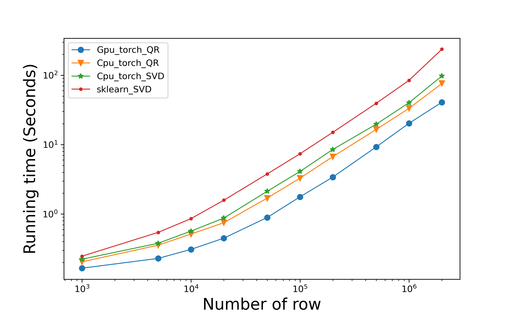
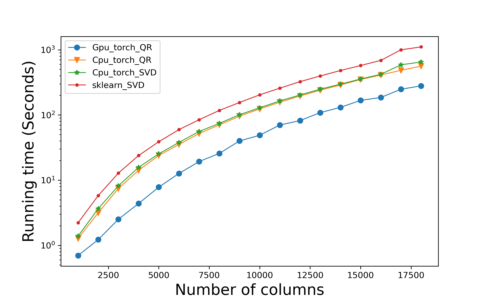

QRPCA¶
A Python package for QR based PCA decomposition with CUDA acceleration via torch.
qrpca is a package that uses singular value decomposition and QR decomposition to perform PCA dimensionality reduction. It takes the two-dimensional matrix data matrix as the input, trains the PCA dimensionality reduction matrix, and reduces the dimension of the test data according to the training data. This method can accelerate the operation with GPU in torch environment. Consequently, this package can be used as a simple toolbox to perform astronomical data cleaning.
How to install qrpca¶
The qrpca can be installed by the PyPI and pip:
pip install qrpca
If you download the repository, you can also install it in the QRPCA directory:
git clone https://github.com/xuquanfeng/qrpca
cd qrpca
python setup.py install
You can access it by clicking on Github-QRPCA
How to use qrpca¶
Here is a demo for the use of qrpca.
The following are the results of retaining principal components containing 95% of the information content by principal component analysis. Setting the parameter n_components to a decimal number less than 1 contains the results of the principal components that account for the amount of information in the total data n_components.
import time
import numpy as np
from qrpca.decomposition import QRPCA
from qrpca.decomposition import SVDPCA
import torch
np.set_printoptions(suppress=True)
X_train = torch.rand(60000,2000)
X_test = torch.rand(10000,2000)
n_com = 0.95
device = torch.device("cuda:0" if torch.cuda.is_available() else "cpu")
start_time = time.time()
pca = QRPCA(n_component_ratio=n_com,device=device) #When the parameter here is decimal, it is the percentage of information retained.
# pca = PCA(n_component_ratio=10) #When the parameter is an integer, n principal components are reserved.
X_train_qrpca = pca.fit_transform(X_train)
X_test_qrpca=pca.transform(X_test)
pca_n=X_train_qrpca.shape[1]
print('='*10,'torch_QR','='*10)
print("keep {} features after pca \nthe shape of X_train after PCA: {} \nthe shape of X_test after PCA: {}".format(pca_n,X_train_qrpca.shape,X_test_qrpca.shape))
print(X_train_qrpca.device)
print("--- %s seconds ---" % (time.time() - start_time))
device = torch.device("cpu")
start_time = time.time()
pca = QRPCA(n_component_ratio=n_com,device=device)
X_train_qrpca = pca.fit_transform(X_train)
X_test_qrpca=pca.transform(X_test)
pca_n=X_train_qrpca.shape[1]
print('='*10,'torch_QR','='*10)
print("keep {} features after pca \nthe shape of X_train after PCA: {} \nthe shape of X_test after PCA: {}".format(pca_n,X_train_qrpca.shape,X_test_qrpca.shape))
print(X_train_qrpca.device)
print("--- %s seconds ---" % (time.time() - start_time))
device = torch.device("cpu")
start_time = time.time()
pca = SVDPCA(n_component_ratio=n_com,device=device)
# pca = PCA(n_component_ratio=10) #When the parameter is an integer, n principal components are reserved.
X_train_qrpca = pca.fit_transform(X_train)
X_test_qrpca=pca.transform(X_test)
pca_n=X_train_qrpca.shape[1]
print('='*10,'torch_SVD','='*10)
print("keep {} features after pca \nthe shape of X_train after PCA: {} \nthe shape of X_test after PCA: {}".format(pca_n,X_train_qrpca.shape,X_test_qrpca.shape))
print(X_train_qrpca.device)
print("--- %s seconds ---" % (time.time() - start_time))
from sklearn.decomposition import PCA
start_time = time.time()
pca2 = PCA(n_components=n_com, copy=True, whiten=False)
X_train_pca2 = pca2.fit_transform(X_train)
X_test_pca2 = pca2.transform(X_test)
pca_n2 = X_train_pca2.shape[1]
print('='*10,'sklearn','='*10)
print("keep {} features after pca \nthe shape of X_train after PCA: {} \nthe shape of X_test after PCA: {}".format(pca_n,X_train_qrpca.shape,X_test_qrpca.shape))
print("--- %s seconds ---" % (time.time() - start_time))
Then the result is as follows:
========== torch_QR ==========
keep 1860 features after pca
the shape of X_train after PCA: torch.Size([60000, 1860])
the shape of X_test after PCA: torch.Size([10000, 1860])
cuda:0
--- 3.66221284866333 seconds ---
========== torch_QR ==========
keep 1860 features after pca
the shape of X_train after PCA: torch.Size([60000, 1860])
the shape of X_test after PCA: torch.Size([10000, 1860])
cpu
--- 8.777541637420654 seconds ---
========== torch_SVD ==========
keep 1860 features after pca
the shape of X_train after PCA: torch.Size([60000, 1860])
the shape of X_test after PCA: torch.Size([10000, 1860])
cpu
--- 9.32607626914978 seconds ---
========== sklearn ==========
keep 1860 features after pca
the shape of X_train after PCA: (60000, 1860)
the shape of X_test after PCA: (10000, 1860)
--- 27.23160696029663 seconds ---
The following is the result of retaining principal components containing an integer number of information items by principal component analysis. Set the parameter n_components to an integer.
Edit the parameters of the above code as follows:
n_com = 500
Then the result is as follows:
========== torch_QR ==========
keep 500 features after pca
the shape of X_train after PCA: torch.Size([60000, 500])
the shape of X_test after PCA: torch.Size([10000, 500])
cuda:0
--- 3.5724520683288574 seconds ---
========== torch_QR ==========
keep 500 features after pca
the shape of X_train after PCA: torch.Size([60000, 500])
the shape of X_test after PCA: torch.Size([10000, 500])
cpu
--- 7.9796741008758545 seconds ---
========== torch_SVD ==========
keep 500 features after pca
the shape of X_train after PCA: torch.Size([60000, 500])
the shape of X_test after PCA: torch.Size([10000, 500])
cpu
--- 8.098357200622559 seconds ---
========== sklearn ==========
keep 500 features after pca
the shape of X_train after PCA: torch.Size([60000, 500])
the shape of X_test after PCA: torch.Size([10000, 500])
--- 15.316067457199097 seconds ---
Comparison of PCA degradation time with different number of rows and different methods for the case of 1000 columns.
Comparison of PCA reduction time with different number of columns and different methods for the case of 30000 rows.
Requirements¶
numpy>=1.21.1
pandas>=1.3.5
torch>=1.8.1
torchvision>=0.8.0
cudatoolkit>=0.7.1
scikit-learn>=1.0.2
Use the dependent environment as above, scikit-python is the dependent package required to load test data.
Copyright & License¶
2022 Xu Quanfeng (xuquanfeng@shao.ac.cn) & Rafael S. de Souza (drsouza@shao.ac.cn) & Shen Shiyin (ssy@shao.ac.cn) & Peng Chen (pengchzn@gmail.com)
This program is free software: you can redistribute it and/or modify it under the terms of the GNU Lesser General Public License as published by the Free Software Foundation, either version 3 of the License, or (at your option) any later version.
This program is distributed in the hope that it will be useful, but WITHOUT ANY WARRANTY; without even the implied warranty of MERCHANTABILITY or FITNESS FOR A PARTICULAR PURPOSE. See the GNU Lesser General Public License for more details.
References¶
Sharma A, Paliwal K K, Imoto S, et al. Principal component analysis using QR decomposition[J]. International Journal of Machine Learning and Cybernetics, 2013, 4(6): 679-683.
Citing qrpca¶
If you want to cite qrpca, please use the following citations.
Software Citation: Xu Quanfeng, & Rafael S. de Souza. (2022). PCA algorithm of QR accelerated SVD decomposition (1.4). Zenodo. https://doi.org/10.5281/zenodo.6417821